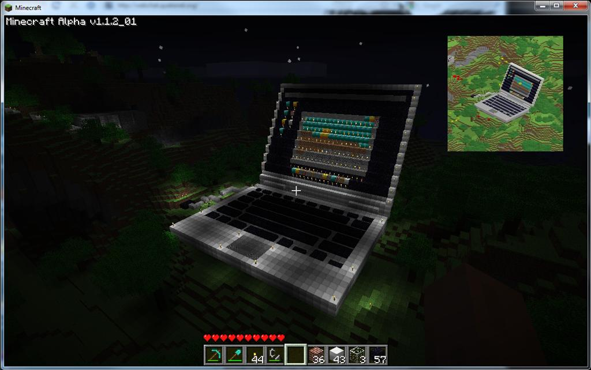

About Me
Hello! My name is Carlos Andrade, and I am a senior at Warren Central High School. I am currently learning web development and this is my very first website. I have a passion for games, especially Minecraft, which is the main focus of this site. I enjoy the core functions of the game, such as building, exploring, and surviving, especially with friends.
Why did I create this site?
A senior student at Warren Central High School, who is learning web development and is creating their very first website. The whole reason behind the creation of this site is to showcase Minecraft, many of their earlier versions and information about the game.
This website aims to show my skills in web development and to provide information about Minecraft and it's various versions, reasons for its popularity, and updates.

"A Minecraft Statue that depicts a laptop, made by Jeb, a developer for Minecraft."
The sites I use as references and resources
The Official Minecraft Website
Image credits
- "Alpha Minecraft Laptop Statue" by Minecraft Wiki, via Mojang Studios, CC BY 4.0. Cropped.
{kind=link}